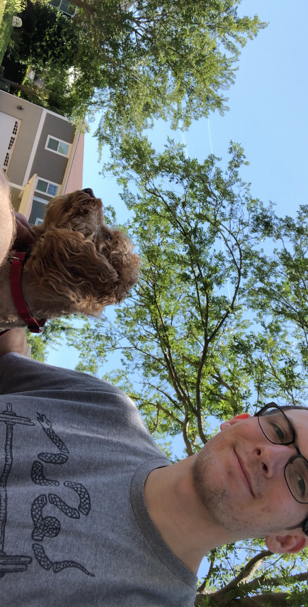

Edit the index.html file in your folder on the Course Web Server and replace the text [student name] with your name.
|  |
Thank you for visiting my WebPage! My name is Joshua Taylor and I am a senior at the University of North
Florida pursuing a bachelor of Science in Computer Science. |
Before starting school at UNF I did not have nearly as many hobbies as I do now because my time here at UNF has allowed me to experience more niche fields of computer science that I can explore and experience on my own. Thanks to an Introduction to Computer Hardware course I took in the Fall of 2019, I now have an interest in circutis and and Arduino programming.
While the majority of my hobbies are made up of interests that I have picked up while studying computer science, I also enjoy exercising through strength training with more niche interests in the bodybuilding and powerlifting.
Welcome to my COP4813 Portfolio
You can view my projects by clicking the links below.
When you complete a project, remember to create a link to it using <a>..</a> tags.
This is your ePortfolio, which acts as a landing page to access each of the projects you complete during this class.